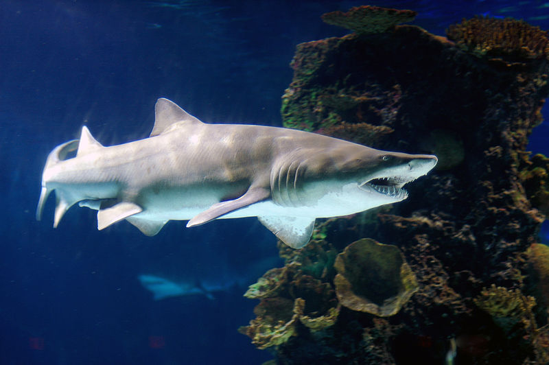
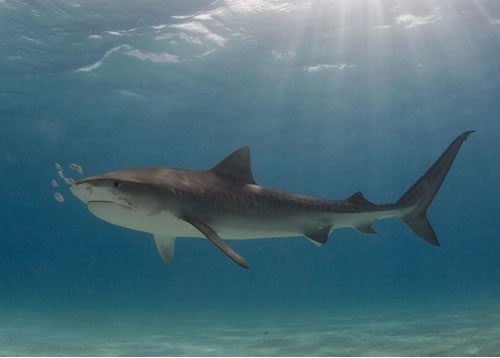
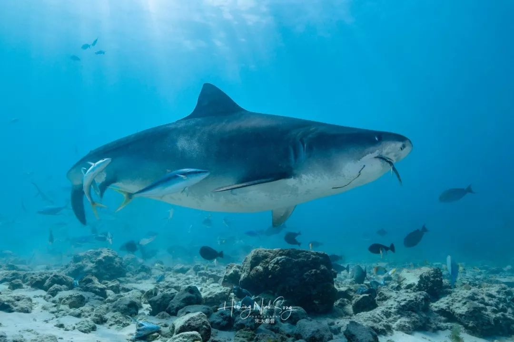

软骨鱼纲，虎鲨目，虎鲨科。长约1 m。体较粗壮。头近方形。吻宽短。口平横。两侧具宽扁唇褶，上下颌前部牙细尖，后部牙臼齿状。眼小，无瞬膜。背鳍2个，各具1硬棘。有臀鳍。体黄褐色，具暗褐色横纹多条。栖于近海底层。食贝类和甲壳类。卵生。有2种：宽纹虎鲨(H.japonicus)，体具宽阔横纹10余条，产于东海和黄海，朝鲜半岛和日本亦有分布;狭纹虎鲨(H.zebra)，体具狭横纹20余条，产于南海、台湾海峡，印度尼西亚至日本南部均有分布。
体粗大而短，头高近方形。眶上突起显著，吻短钝，眼小，椭圆形，上侧位，无瞬膜。鼻孔具鼻口沟。口平横，上、下唇褶发达。上、下颌牙同型，每颌前、后牙异型，前部牙细尖，3～5齿头；后部牙平扁，臼齿状。喷水孔小，位于眼后下方。鳃孔5个,最后3～4个位于胸鳍基底上方。背鳍2个,各具一硬棘；具臀鳍；尾鳍宽短，帚形，下叶前部三角形突出，尾基无凹洼；胸鳍宽大。分布在太平洋、印度洋各热带与温带海区。中国现有2种，宽纹虎鲨和狭纹虎鲨。
体型：
虎鲨体粗大而短，头高近方形。眶上突起显著，吻短钝，眼小，椭圆形，上侧位，无瞬膜。鼻孔具鼻口沟。口平横，上、下唇褶发达。上、下颌牙同型，每颌前、后牙异型，前部牙细尖，3～5齿头；后部牙平扁，臼齿状。喷水孔小，位于眼后下方。鳃孔5个，最后3～4个位于胸鳍基底上方。背鳍2个，各具一硬棘；具臀鳍；尾鳍宽短，帚形，下叶前部三角形突出，尾基无凹洼；胸鳍宽大。
牙齿：
虎鲨的牙齿使它们几乎无坚不摧。虎鲨的牙齿永远不会掉光。因为，它们的牙床上总能长出新牙。一旦前面的牙齿老化或者受伤掉了。后面的牙齿就会自动补齐先前的位置。
食性
虎鲨的食性很复杂。在虎鲨的菜单上有乌贼、鱼、软体动物、甲壳类动物、海鸟、小型海兽、动物尸体和垃圾。虎鲨有良好的视力和嗅觉。他们能侦测到动物们藏身处电磁场的变化，他们也能感觉到远处鱼群游水时引起的水流波动。 [4]习性
虎鲨用背鳍棘御敌害。体黄色并具黑色横纹，是避免敌害的警戒色。
生长繁殖
虎鲨在繁殖后代的时候一次可以产下30到40多枚卵，最多的可以产下84枚卵。
虎鲨类早在古生代石炭纪就有化石记录，中生代最为繁盛，到新生代渐衰落。是一类大型鲨鱼，长可达9米,体笨重。栖息底层，食贝类及甲壳类动物。用背鳍棘御敌害。眼小，椭圆形，上侧位，无瞬膜。鼻孔具鼻口沟。口平横，上、下唇褶发达。体黄色并具黑色横纹，是避免敌害的警戒色。背鳍2个，各具一硬棘；具臀鳍；尾鳍宽短，帚形，下叶前部突出，虎鲨每次产卵2枚，卵具螺旋瓣的圆锥形角质囊,卵囊末端曳有长丝，借以固着于附着物上。
现分布在世界范围内的温带和热带水域中，通常可以在广阔海洋的深水中发现它。由于其身上的横纹有宽有窄，故又有狭纹虎鲨和宽纹虎鲨之分。狭纹虎鲨体表有横纹20余条从印度尼西亚到日本海南部均有分布，中国主要产于南海和台湾海峡；宽纹虎鲨身上横纹10多条，中国产于东海和黄海。
